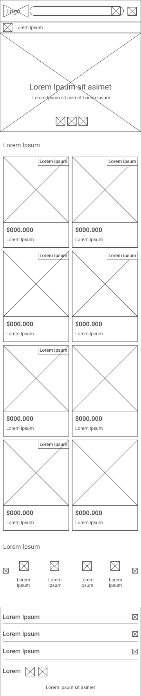

WIREFRAMES


EL RASTRO
ClienteEl Rastro
RubroAnuncios online para publicidad y compra y venta.
RolDiseñadora UX/UI
Problema
El diseño actual es anticuado y no se ha actualizado en mucho tiempo.
Solución
Realizar una evaluación y análisis para entender la experiencia actual.
Objetivo
Rediseñar el flujo del cliente cuando busca y encuentra un articulo.
El diseño actual es anticuado y no se ha actualizado en mucho tiempo.
Se inició realizando un card sorting para evaluar la clasificación de las categorías.
Se realizó una evaluación de las secciones importantes y se contrastó con las soluciones, de esa forma se puede ver que las soluciones reordenan y simplifican la experiencia.
Navbar
Diseño original:
Rediseño:
Buscador
Diseño original:
Rediseño:
Segundo menú
Diseño original:
Rediseño:
Sección call center
Diseño original:
Rediseño:
Mapa
Diseño original:
Rediseño:
Categorías
Diseño original:
Rediseño:
Sección publicitaria
Diseño original:
Rediseño:
Footer
Diseño original:
Rediseño:
Luego de validar los puntos anteriores (entrevistas, pruebas de usuario y análisis de la competencia) y con el fin de hacer que el usuario logre obtener una buena experiencia, se definió la arquitectura de información ó flujo de navegación para la búsqueda de locales, el filtro, las vistas, etc.
Se consideró hacer bocetos en vista desktop y mobile ya que las personas "vitrinean" mucho más en dispositivos móviles .Estos son algunos de los bocetos:
Se realizó un test de guerrilla para obtener información rápida de los usuarios.
Usuarios
Se reclutaron usuarios con las siguientes características:
Preguntas
Experiencia sección home
Experiencia menú
Experiencia sección categoría
Experiencia sección producto
Experiencia sección listado de productos
Preguntas de cierre
"Buscar el anuncio de un joystick para celular".
Por ser una página con múltiples opciones solo se hicieron pantallas para la sección de tecnología, las cuales se puede encontrar en el buscador , categorías y secciones del Home, se sabe que por buena práctica no se puede sesgar al usuario, pero por tener pocas pantallas y una cantidad extensa de productos se trató de marcar un ritmo.
Sección del buscador Web:
Sección del producto

Luego de la iteración anterior se llegó a esta propuesta: